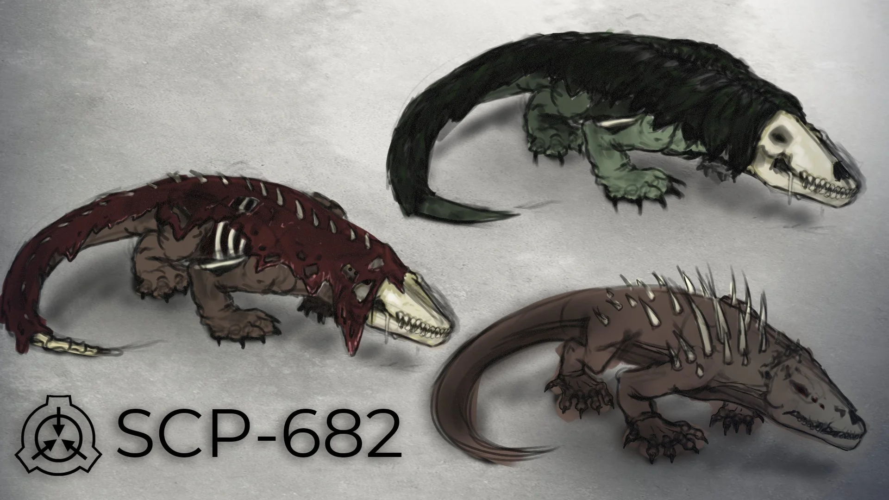

Containment Procedures
SCP-682 is to be contained in a 5 m x 5 m x 5 m chamber lined with reflective material and filled with a highly corrosive acid to a depth of 1 m. The chamber is to be monitored via motion sensors and thermal cameras. All personnel entering SCP-682's chamber must wear Level A hazmat suits and be armed with lethal force. In the event of a containment breach, all available Mobile Task Forces are to be deployed with extreme prejudice. SCP-682 is to be terminated if it breaches containment.
Description
SCP-682 appears as a large, vaguely reptilian creature approximately 2 meters tall when quadrupedal, though it can extend to over 4 meters when standing upright. Its body is covered in thick, scaly skin that is highly resistant to damage. SCP-682 possesses extreme regenerative capabilities, able to regrow lost limbs and heal from severe injuries in a matter of hours. It has demonstrated the ability to adapt to various forms of damage, including gunfire, explosives, and corrosive substances.
Additional notes: SCP-682 has shown no signs of aging or degradation since initial containment. Psychological evaluations indicate a profound hatred of all living things and a desire to cause as much destruction as possible. It has repeatedly attempted to breach containment with the explicit goal of terminating all life it can perceive.